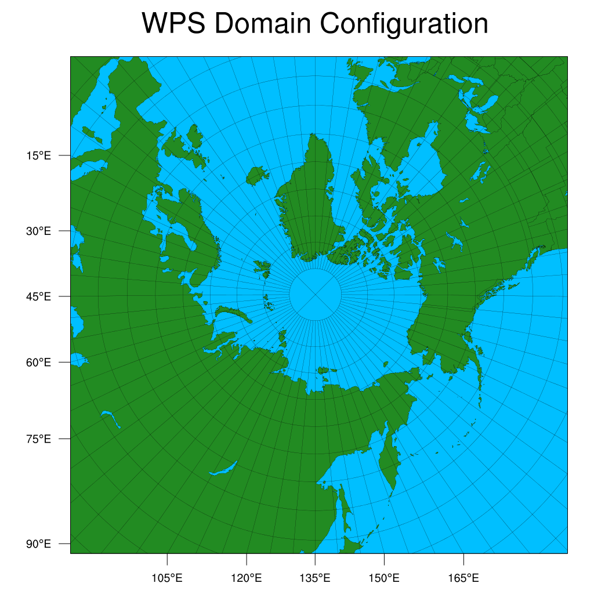

|
WRFDA Regression testing: Test details
This page contains information about each individual regression test. Some tests are quite complicated, containing multiple parts run in sequence (for example, CYCLING tests).
Click a link below or scroll to see the details on each test.
afwa_t7_ssmi
| A polar winter case, assimilating conventional obs and SSMI retrievals. This test uses a large polar domain with a polar stereographic projection. |
 |
| Test type(s) |
3DVAR |
| Parallelism(s) |
serial, dmpar (4 cores) |
| Background file |
OUTPUT FROM WRF V3.7 MODEL
12-hour forecast output starting at 2009-01-19_18:00:00, valid at 2009-01-20_06:00:00
100x100, 57 vertical levels, 100 km resolution
Full ncdump text |
| Observations |
Conventional: SOUND, GEOAMV, AIREP, METAR, SHIPS
Other: SSMI retrievals |
| Test settings |
Full namelist file |
afwa_t7_ssmi_32
A polar winter case, assimilating conventional obs and SSMI retrievals. This test uses a large polar domain with a polar stereographic projection.
This is the same as the "afwa_t7_ssmi" test, but with a WRF V3.2 first guess file. This will help test for back-compatable regressions. |
 |
| Test type(s) |
3DVAR |
| Parallelism(s) |
serial, dmpar (4 cores) |
| Background file |
OUTPUT FROM WRF V3.2 MODEL
12-hour forecast output starting at 2009-01-19_18:00:00, valid at 2009-01-20_06:00:00
100x100, 57 vertical levels, 100 km resolution
Full ncdump text |
| Observations |
Conventional: SOUND, GEOAMV, AIREP, METAR, SHIPS
Other: SSMI retrievals |
| Test settings |
Full namelist file |
ASR_airs
| This is the "ASR180" domain used for a test case in the WRFDA tutorial. A polar early-winter case, assimilating AIRS radiance data. This test uses a very large polar domain with a polar stereographic projection. |
 |
| Test type(s) |
3DVAR |
| Parallelism(s) |
dmpar (16 cores) |
| Background file |
OUTPUT FROM WRF V3.5 MODEL
12-hour forecast output starting at 2007-11-30_12:00:00, valid at 2007-12-01_00:00:00
80x80, 71 vertical levels, 200 km resolution
Full ncdump text |
| Observations |
Radiance: AIRS |
| Test settings |
Full namelist file |
Untested options
The following assimilation method/observation combinations are NOT yet included in current tests:
| Completely untested |
SSMI TB |
| Untested for 3DVAR |
... |
Download test cases
The data needed for running the regression test package can be found below. The full test (including compilation) takes about 20-30 minutes on Yellowstone, 2 hours on a Linux PC (using 6 cores):
Latest release version (V3.7):
- Input data
- Baseline data:
Version 3.6.1:
- Input data
- Baseline data:
 
|

{kind=link}